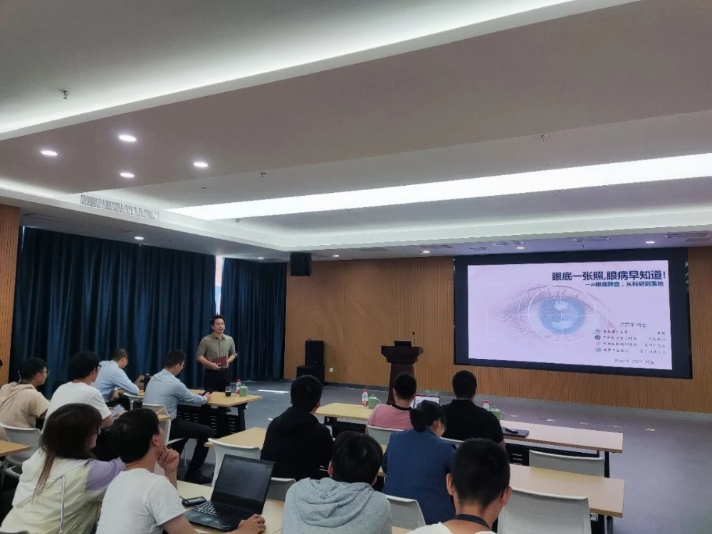
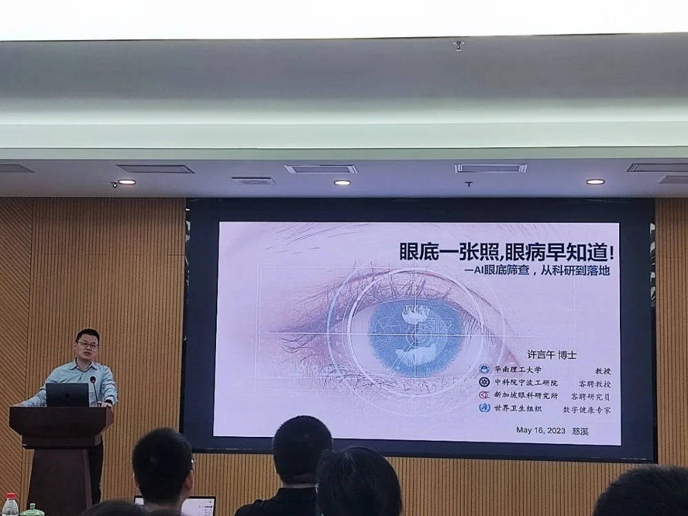
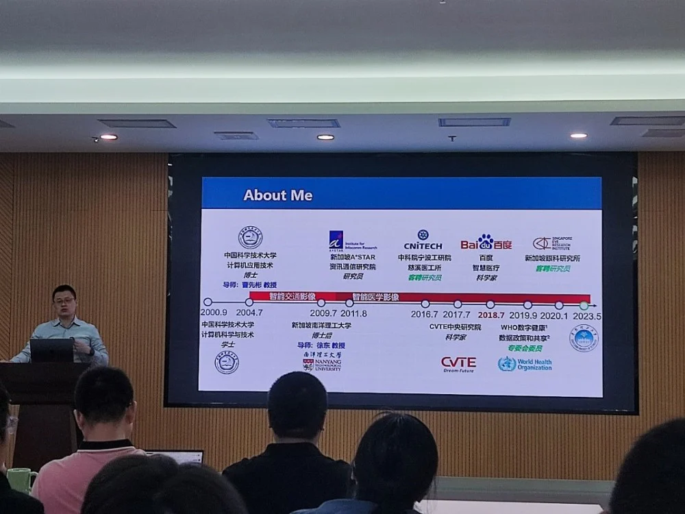
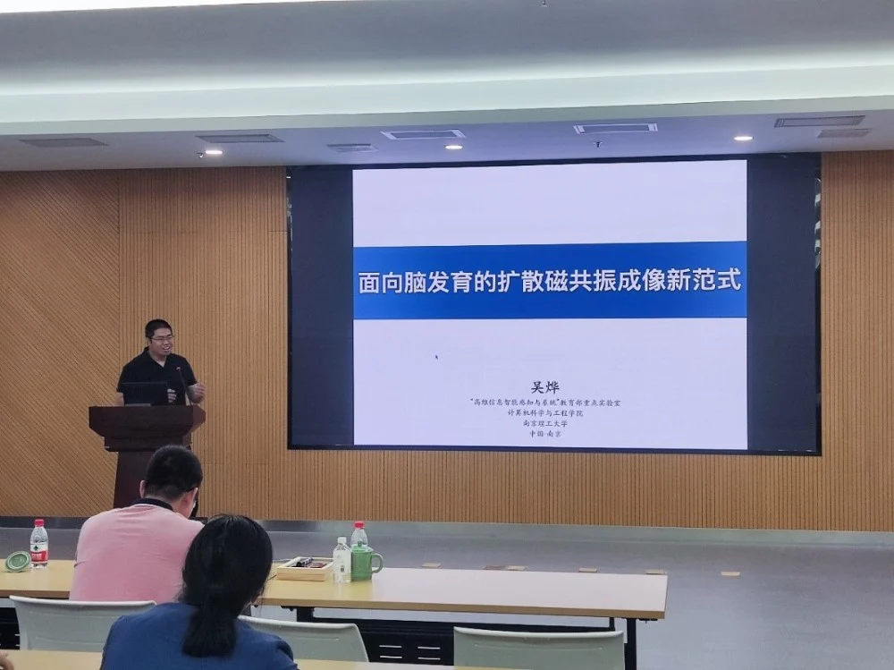
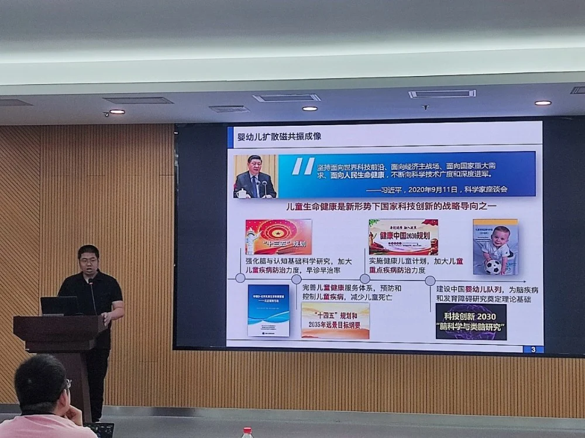
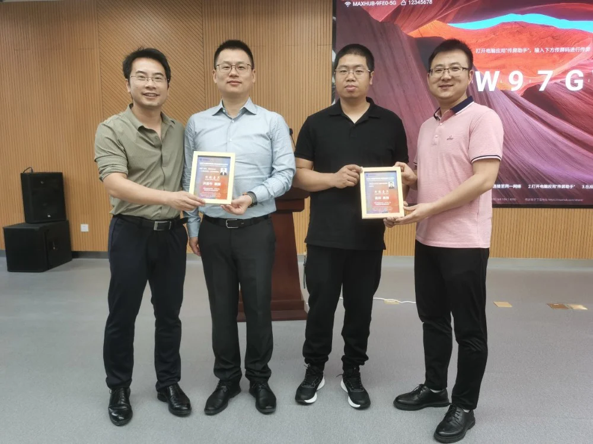

医学图像/眼科影像专题学术分享会
---- IMED中国第五十七讲、第五十八讲
邀请嘉宾：
许言午教授 华南理工大学
吴烨教授 南京理工大学
中国科学院宁波材料技术与工程研究所及宁波工业技术研究院于2023年5月16日举办医学图像/眼科影像专题学术分享会。主题分别为“眼底一张照，眼病早知道!“和“面向脑发育的扩散磁共振成像新范式”。此次活动邀请到许言午教授和吴烨教授作为演讲嘉宾。本次分享会由IMED团队负责人的赵一天研究员主持。

许言午教授来自华南理工大学未来技术学院教授、WHO数字健康咨询委员会专家以及新加坡眼科研究所客聘教授等多重身份的学术专家。他在计算机视觉和机器学习领域进行了十多年的研究，并取得了显著的成果。许言午教授在学术界拥有广泛的影响力，发表了150余篇顶级国际期刊和会议论文，其研究成果被谷歌引用超过6600次。他还申请了20多件国际专利和70多件中国专利。他目前担任多个国际期刊编委，并在医疗影像领域的顶级会议和国际学术会议上担任组委和委员。


近年来，医学影像AI成为智慧医疗领域的研究热点之一，而AI眼底筛查更是商业化落地最成功的案例之一。许教授结合自己的实践经验，分享他在AI眼底筛查领域的研究成果以及商业化落地的成功经验。他深入剖析如何将AI影像技术应用于临床诊疗流程中，并为听众打开医工交叉科研和商业落地的视角。许教授分享如何在科学研究和产品落地之间取得平衡，以实现AI眼底筛查技术在临床诊疗中的真正应用。他强调，如今的工科研究越来越注重实际应用价值，科研人员不仅需要攻克科学难题，还要面向商业落地，实现经济价值。两者相辅相成，各自遵循其法则。
吴烨教授是南京理工大学计算机学院的教授，江苏省引进高层次青年人才以及江苏省特聘教授。他长期从事智慧医疗与人工智能的研究，并在脑影像增强、脑纤维图谱绘制、个性化精准医疗等领域展开了系统的研究工作。吴烨教授在学术界拥有广泛的影响力，在顶级期刊和会议上发表了50多篇学术论文，Google学术引用1600余次。他的研究成果荣获了多个奖项，包括Medical Image Analysis最佳论文奖、国际磁共振学会（ISMRM）卓越论文奖等，他的研究成果还被纳入了美国国家"Baby Connectome Project"计划。
吴烨教授围绕儿童大脑发育的特点展开讨论。儿童大脑的特点是动态发展变化，这些变化在心理、生物和社会层面启动了学习过程。这些学习过程塑造了他们的认知、动机和决策。这导致出现行为模式，可以以目标为导向的方式灵活调整。然而，如果发展出现问题，异常学习可能会导致失控行为模式。脑科学和人工智能正在解决这些重大问题。近几年，脑科学和人工智能取得了高速进展，极大促进了对儿童大脑发育、功能和疾病的了解，推动了儿童健康向前发展。其中，扩散磁共振成像（dMRI）是唯一无创检测脑微观组织和宏观连接的技术，是研究脑智发育重要手段。针对dMRI扫描时间过长且对婴幼儿脑智发育研究不敏感的科学问题，立足多学科交叉融合，面向dMRI新理论和方法，探讨新型快速成像序列，突破dMRI成像在婴幼儿扫描与分析瓶颈，为早期诊断与预后评估提供精准高效的影像依据。


感谢两位教授的精彩演讲和对问题的详尽回答与交流，我们深信IMED的同学们将在这样的学术氛围中不断成长，而IMED也将因此不断发展与进步！
